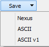

Fit Model Choices¶
Mantid containing a constant increasing catalog of predefined fitting function which can be used to create a model. Some of these well be demonstrated here. In addition create new fitting function using the Fit Function toolbox or by extending Mantid using either a plugin mechanism. The former will be covered here.
Multiple peaks + background¶
Mantid allows one to fit overlapping peaks on a common background. Just follow the steps described earlier to add more peaks to the model. The peaks don’t have to be of the same type.
{kind=link}
Non peak model + background¶
Mantid fitting tool isn’t limited to peaks and backgrounds. You can select any other function from a list offered by the “Add other function..” option.
{kind=link}
Use custom fitting function¶
User defined function¶
Mantid provides a user defined function called UserFunction. It has an attribute called “Formula” which accepts a text string with a mathematical formula. All variables in the formula are treated as parameters except for “x” which is the argument.
{kind=link}
The formula can either be entered in the text editor in the Fit Function browser or constructed with the help of the User Function Dialog.
{kind=link}
Edit your function in the text field, browse and add () to your formula any built-in or saved function. The fitting parameters are extracted automatically and displayed in the Parameters read-only field. If the field is empty then your formula contains errors.
When finished click the Use button to insert the formula into the Fit Function browser.
The constructed formula can be saved permanently for future use. Click the Save button  to see the dialog:
{kind=link}
Now your function appears in the list of available functions:
{kind=link}
Any unwanted function can be removed from the list using button.
{kind=link}